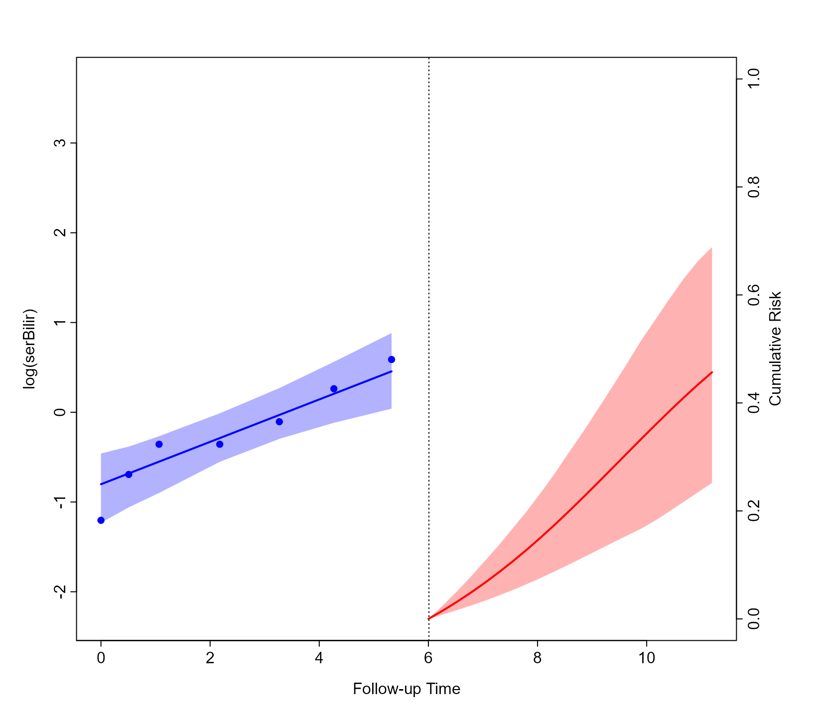

Combined Dynamic Predictions via Super Learning
Dimitris Rizopoulos
2026-01-23
Source:vignettes/Super_Learning.Rmd
Super_Learning.RmdSuper Learning
Motivation and Theory
Joint models for longitudinal and time-to-event data have been established as a versatile tool for calculating dynamic predictions for longitudinal and survival outcomes. The advantageous feature of these predictions is that they are updated over time as extra information becomes available. As a result, they have found numerous applications in precision medicine, including cancer and cardiovascular diseases. Previous applications of joint models have considered a single model for obtaining dynamic predictions. However, finding a well-specified model can be challenging, especially considering multiple longitudinal outcomes. Moreover, due to the dynamic nature of these predictions, different models may provide different levels of accuracy at different follow-up times. Here, we consider multiple joint models instead and combine the dynamic predictions from these models to optimize the predictive accuracy. We use the concept of super learning (SL) to achieve this. SL is an ensemble method that allows researchers to combine several different prediction algorithms into one. It uses V-fold cross-validation to build the optimally weighted combination of predictions from a library of candidate algorithms. Optimality is defined by a user-specified objective function, such as minimizing mean squared error or maximizing the area under the receiver operating characteristic curve.
The basic idea behind super learning is to derive model weights that optimize the cross-validated predictions. More specifically, we let \mathcal{L} = \{M_1, \ldots, M_L\} denote a library with L models. There are no restrictions to the models included in this library, and it is recommended to consider a wide range of possible models. Among others, these joint models differ in the specification of the time trend in the longitudinal submodels and the functions form and event submodel. We split the original dataset \mathcal{D}_n in V folds. The choice of V will depend on the size and number of events in \mathcal{D}_n. In particular, for each fold, we need to have a sufficient number of events to quantify the predictive performance robustly. Using the cross-validation method, we fit the L models in the combined v-1 folds, and we will calculate predictions for the v-th fold we left outside. Due to the dynamic nature of the predictions, we want to derive optimal weights at different follow-up times. More specifically, we consider the sequence of time points t_1, \ldots, t_Q. The number and placing of these time points should again consider the available event information in \mathcal{D}_n. For t_q \in \{t_1, \ldots, t_Q\}, we define \mathcal{R}(t_q, v) to denote the subjects at risk at time t_q that belong to the v-th fold. For all subjects in \mathcal{R}(t_q, v), we calculate the cross-validated predictions, \hat{\pi}_i^{(v)}(t_q + \Delta t \mid t_q, M_l) = \Pr \{T_i^* < t_q + \Delta t \mid T_i^* > t_q, \mathcal H_i(t), M_l, \mathcal{D}_n^{(-v)}\}. These predictions are calculated based on model M_l in library \mathcal{L} that was fitted in the dataset \mathcal{D}_n^{(-v)} the excludes the patients in the v-th fold. The calculation is based on a Monte Carlo approach. We define \hat{\tilde{\pi}}_i^{v}(t_q + \Delta t \mid t_q) to denote the convex combination of the L predictions, i.e., \hat{\tilde{\pi}}_i^{v}(t_q + \Delta t \mid t_q) = \sum\limits_{l = 1}^L \varpi_l(t_q) \hat{\pi}_i^{(v)}(t_q + \Delta t \mid t_q, M_l), \quad \mathrm{for all } v \in {1, \ldots, V}, with \varpi_l(t_q) > 0, for l = 1, \ldots, L, and \sum_l \varpi_l(t_q) = 1. Note that the weights \varpi_l(\cdot) are time-varying, i.e., at different follow-up times, different combinations of the L models may yield more accurate predictions.
For any time t, we will select the weights \{\varpi_l(t); l = 1, \ldots, L\} that optimize the predictive performance of the combined cross-validated predictions using proper scoring rules. A scoring rule \mathcal{S}\{\pi_i(u \mid t), \mathbb{I}(t < T_i^* < u)\} is called proper if the true distribution achieves the optimal expected score, i.e., in our case if E \left [\mathcal{S}\{\pi_i^{true}(u \mid t), \; \mathbb{I}(t < T_i^* < u) \} \right] \leq E \left [\mathcal{S}\{\hat{\pi}_i(u \mid t), \; \mathbb{I}(t < T_i^* < u) \} \right], \quad u > t,
where \pi_i^{true}(u \mid t) denotes the conditional risk probabilities under the true model, and \hat{\pi}_i(u \mid t) is an estimate of \pi_i^{true}(u \mid t). The expectation is taken with respect to the conditional density of the survival outcome under the true model \{T_i^* \mid T_i^* > t, \mathcal Y_i(t)\}, with \mathcal Y_i(t) = \{ y_i(t_{il}); 0 \leq t_{il} \leq t, l = 1, \ldots, n_i\}, and the scoring rule \mathcal S(\cdot, \cdot) is defined such that a lower score indicates better accuracy.
The Brier score is a proper scoring rule that combines discrimination and calibration to measure overall predictive performance. In particular, at follow-up time t and for a medically-relevant time window \Delta t, we define the Brier score as \mathrm{BS}(t + \Delta t, t) = E \left [\left \{ \mathbb{I}(T_i^* \leq t + \Delta t) - \tilde{\pi}_i^{v}(t + \Delta t \mid t) \right \}^2 \; \Big | \; T_i^* > t \right].
As an alternative proper scoring rule in the interval (t, t + \Delta t] we consider an adaptation of the expected predictive cross-entropy (EPCE): \mathrm{EPCE}(t + \Delta t, t) = E \left \{-\log \left [ p \bigl \{ T_i^* \mid t < T_i^* < t + \Delta t, \mathcal Y_i(t), \mathcal D_{n} \bigr \} \right ] \right \},
where the expectation is taken with respect to \{T_i^* \mid T_i^* > t, \mathcal Y_i(t)\} under the true model. In our context, both \mathrm{BS}(t + \Delta t, t) and \mathrm{EPCE}(t + \Delta t, t) are calculated using the convex combination of the cross-validated predictions \hat{\tilde{\pi}}_i^{v}(t + \Delta t \mid t). In particular, using the super-learning procedure, we obtain the weights \widehat{\varpi}_l(t) that minimize a proper scoring rule (in our case, either the \mathrm{BS}(t + \Delta t, t) or \mathrm{EPCE}(t + \Delta t, t)) of the cross-validated predictions, \widehat{\varpi}_l(t) = \mathrm{argmin}_{\varpi} \left [ \mathcal{S} \left \{ \sum_{l = 1}^L \varpi_l \hat{\pi}_i^{(v)}(t + \Delta t \mid t, M_l), T_i, \delta_i \right \} \right], \quad v = 1, \ldots, V,
under the constraints \varpi_l(t) > 0, for l = 1, \ldots, L, and \sum_l \varpi_l(t) = 1.
Example
We will illustrate the application of super learning for combining
dynamic predictions from joint models using the PBC dataset. We start by
splitting the pbc2 database into five folds using function
create_folds():
CVdats <- create_folds(pbc2, V = 5, id_var = "id")The first argument for this function is the data.frame
we wish to split in V folds. The argument
id_var specifies the name of the subject’s id variable in
this dataset. The output of create_folds() is a list with
two components named "training" and "testing".
Each component is another list with V data.frames.
Next, we define the function that will fit the joint models we wish
to consider for calculating predictions. This function should have as a
single argument a data.frame that will be used to fit the
joint models. To optimize computational performance we will use parallel
computing to fit these models to the different training datasets. Hence,
within the function we should have the call
library("JMbayes2") to load package
JMbayes2 for each worker. The output of this function
should be a list of the fitted joint models with class
"jmList". Assigning this class to the resulting list will
facilitate combining the predictions later. For our example, we use the
following specifications:
fit_models <- function (data) {
library("JMbayes2")
data$status2 <- as.numeric(data$status != "alive")
data_id <- data[!duplicated(data$id), ]
lmeFit <- lme(log(serBilir) ~ year, data = data,
random = ~ year | id,
control = lmeControl(opt = "optim"))
CoxFit <- coxph(Surv(years, status2) ~ 1, data = data_id)
jmFit1 <- jm(CoxFit, lmeFit, time_var = "year")
jmFit2 <- update(jmFit1,
functional_forms = ~ slope(log(serBilir)))
jmFit3 <- update(jmFit1,
functional_forms = ~ value(log(serBilir)) + area(log(serBilir)))
###
lmeFit2 <- lme(log(serBilir) ~ ns(year, 2, B = c(0, 14.4)) + sex + age,
data = data, random = ~ ns(year, 2, B = c(0, 14.4)) | id,
control = lmeControl(opt = "optim"))
CoxFit2 <- coxph(Surv(years, status2) ~ sex + age, data = data_id)
jmFit4 <- jm(CoxFit2, lmeFit2, time_var = "year")
jmFit5 <- update(jmFit4,
functional_forms = ~ slope(log(serBilir)))
out <- list(M1 = jmFit1, M2 = jmFit2, M3 = jmFit3, M4 = jmFit4, M5 = jmFit5)
class(out) <- "jmList"
out
}In particular, we consider a library of univariate joint models for
the longitudinal outcome serBilir and the composite event
transplantation or death. The first three models consider a simple
linear mixed effects model for serum bilirubin with random intercepts
and random slopes per subject and no other covariates. Also, in the Cox
model for the composite event, we do not specify any baseline
covariates; hence, the risk of the composite event depends only on serum
bilirubin. The three models differ in the corresponding functional
forms, i.e., the current value of log serum bilirubin, the current
slope/velocity of log serum bilirubin, and the current value plus the
area under the log serum bilirubin trajectory. The last models consider
a more elaborate specification of the linear mixed model that includes
natural cubic splines in both the fixed and random effects to allow for
non-linearities in the log serum bilirubin trajectories and the main
effects of sex and age in both the mixed and Cox models. The functional
forms are, again, the current value and the current slope.
We fit these models in the training datasets using parallel computing as facilitated using the parallel package (note: this and the subsequent computations require some time to perform depending on your machine; in my machine with an Intel(R) Core(TM) i9-10885H CPU @ 2.40GHz and 32.0 GB RAM takes about 20 min to run the whole vignette):
cl <- parallel::makeCluster(5L)
Models_folds <- parallel::parLapply(cl, CVdats$training, fit_models)
parallel::stopCluster(cl)We calculate the weights to combine the predictions from these five
models to optimize the integrated Brier score and the expected
predictive cross-entropy at follow-up time t =
6 years and for a relevant window of \Delta t = 2 years. The function
tvBrier() automatically performs this task by providing the
list of joint models fitted in the training datasets as a first
argument. The integrated Brier score is calculated using the testing
datasets that are provided in the newdata argument:
tstr <- 6
thor <- 8
Brier_weights <- tvBrier(Models_folds, newdata = CVdats$testing,
integrated = TRUE, Tstart = tstr, Thoriz = thor)
Brier_weights
#>
#> Cross-Validated Prediction Error using the Library of Joint Models 'Models_folds'
#>
#> Super Learning Estimated Integrated Brier score: 0.0548
#> In the time interval: [6, 8)
#> For the 166 subjects at risk at time 6
#> Number of subjects with an event in [6, 8): 18
#> Number of subjects with a censored time in [6, 8): 44
#> Accounting for censoring using model-based weights
#>
#> Integrated Brier score per model: 0.0596 0.0588 0.0613 0.0523 0.0611
#> Weights per model: 0.199 0.1976 0.1925 0.214 0.1969
#> Number of folds: 5We observe that the fourth model dominates the weights. Hence, the
integrated Brier score based on the combined predictions is essentially
the integrated Brier score of this model. To calculate the model weights
using the expected predictive cross-entropy, use function
tvEPCE() with an almost identical call as for the Brier
score:
EPCE_weights <- tvEPCE(Models_folds, newdata = CVdats$testing,
Tstart = tstr, Thoriz = thor)
EPCE_weights
#>
#> Cross-Validated Expected Predictive Cross-Entropy using the Library of Joint Models 'Models_folds'
#>
#> Super Learning Estimated EPCE: 0.3109
#> In the time interval: [6, 8)
#> For the 166 subjects at risk at time 6
#> Number of subjects with an event in [6, 8): 18
#> Number of subjects with a censored time in [6, 8): 44
#>
#> EPCE per model: 0.3568 0.3599 0.3639 0.3589 0.4157
#> Weights per model: 0.0013 0.5387 0.4599 0 1e-04
#> Number of folds: 5The EPCE results indicate that models M2 and
M3 share the most weight. We observe that the EPCE based on
the combined cross-validated predictions is smaller than the EPCE based
on the cross-validated predictions of each individual model.
To use these weights in practice, we must first refit the five joint models we considered in the original dataset.
Models <- fit_models(pbc2)Then, we construct the dataset with the subjects at risk at year six and consider the longitudinal measurements collected before this follow-up time. Also, we set in this dataset the observed event time to six and the event variable to zero, i.e., indicating that patients were event-free up to this time:
ND <- pbc2[pbc2$years > tstr & pbc2$year <= tstr, ]
ND$id <- ND$id[, drop = TRUE]
ND$years <- tstr
ND$status2 <- 0As an illustration, we will combine the cumulative risk predictions
for Patient 8 using the EPCE weights. We achieve that using the
predict() method for objects of class
"jmList"; we also need to provide the weights
argument. The rest of the arguments are the same as in the
predict() method for "jm" objects (see also
the Dynamic Predictions vignette):
model_weights <- EPCE_weights$weights
predsEvent <- predict(Models, weights = model_weights, newdata = ND[ND$id == 8, ],
process = "event", return_newdata = TRUE)
predsLong <- predict(Models, weights = model_weights, newdata = ND[ND$id == 8, ],
return_newdata = TRUE)
plot(predsLong, predsEvent)